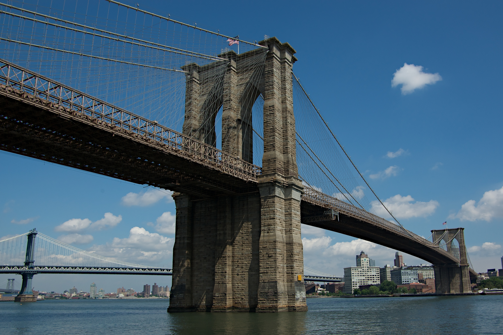

Nova Iorque
Nova Iorque, a "cidade que nunca dorme", é um destino icônico que cativa a imaginação das pessoas ao redor do mundo. Com a sua agitação urbana, horizonte impressionante e uma energia vibrante, Nova Iorque oferece uma experiência inesquecível aos visitantes. Vamos explorar alguns dos seus pontos turísticos mais famosos.
A Times Square é o coração de Nova Iorque, uma área movimentada e cheia de luzes brilhantes. Com os seus enormes letreiros de néon e multidões animadas, a Times Square é um símbolo da cidade.
A Estátua da Liberdade é um marco emblemático dos Estados Unidos e um dos pontos turísticos mais famosos do mundo. Localizada na Ilha da Liberdade, na foz do rio Hudson, a estátua foi um presente da França para os Estados Unidos. Os visitantes podem fazer um passeio de barco até a ilha para admirar de perto essa figura icônica e aprender sobre sua importância histórica.
O Central Park é um oásis verde no meio da agitação urbana de Nova Iorque. Com os seus vastos campos, lagos e trilhas arborizadas, o parque oferece um refúgio tranquilo para os nova-iorquinos e visitantes.

Time Square

Estátua da Liberdade

Ponte do Brooklyn